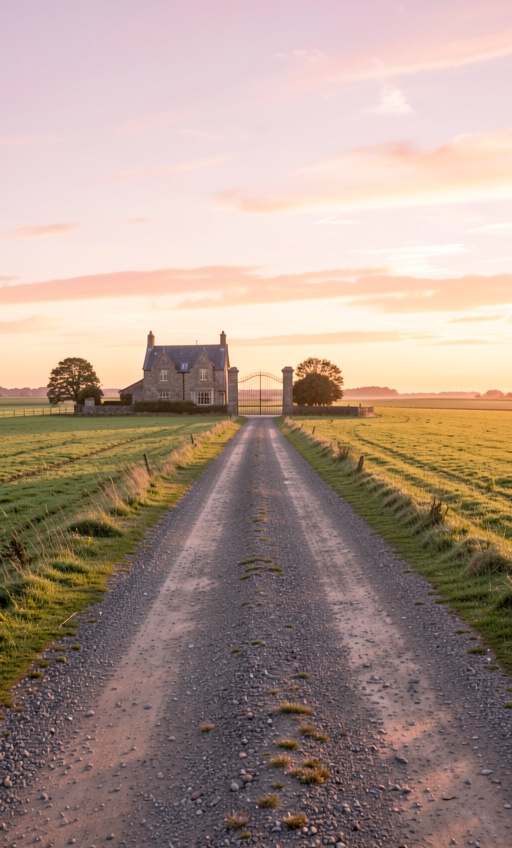
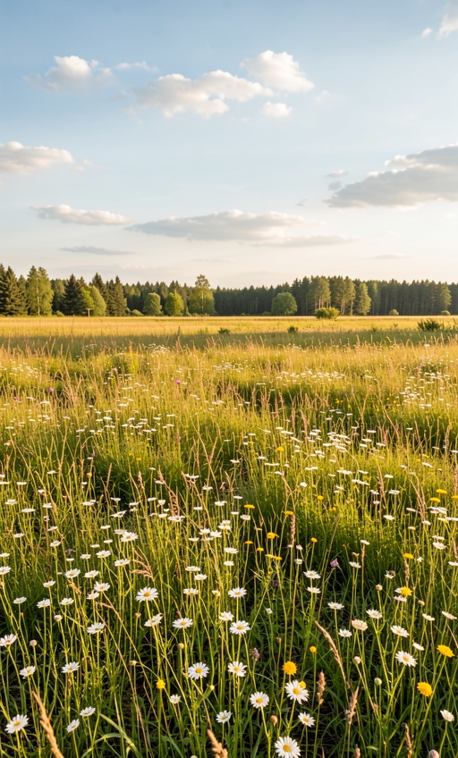
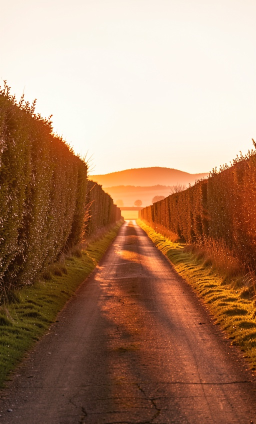
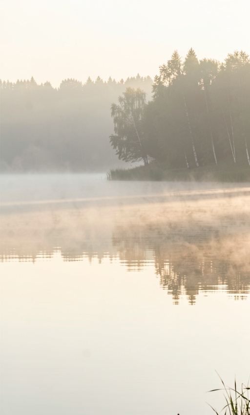
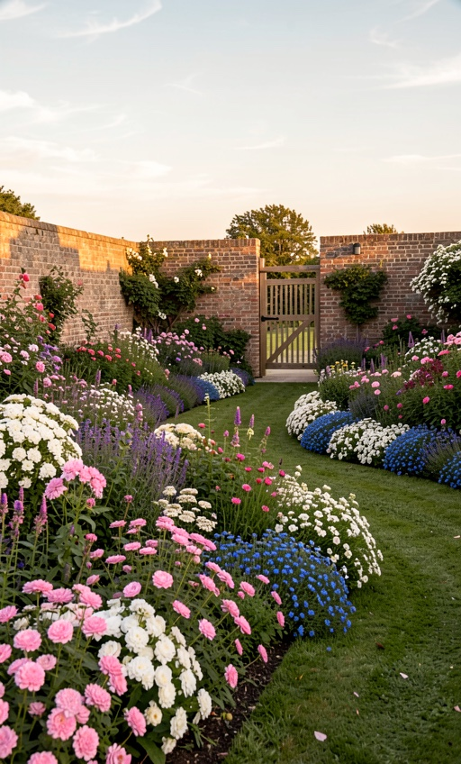

Every clip starts on the hallway plate and is pinned to the destination on the left. Generated 2026-08-12 00:30.
the camera walks down the dim central hallway to the heavy front door, the door swings open and floods the hallway with pink-gold sunrise light, the camera walks out across the front step and down the gravel drive toward the open iron gate and the bright open fields beyond

the camera walks down the dim central hallway to the door at the end, the door opens onto blinding warm summer daylight, the camera walks out of the house and into a sunlit wildflower meadow, tall grass brushing past the lens, the house left behind

the camera walks down the dim central hallway to the front door, the door opens onto low warm orange sunset light, the camera walks out of the house and away down a quiet country lane between tall hedgerows, the golden evening light growing warmer

the camera walks down the dim central hallway to the door at the end, the door opens onto soft pale dawn light, the camera walks out of the house and down to the edge of a calm misty lake at first light, still gold water opening out ahead

the camera walks down the dim central hallway to the garden door, the door opens onto warm golden sunrise light, the camera walks out into an old walled garden in full bloom, deep flower borders on both sides, toward an open wooden gate in the far wall
